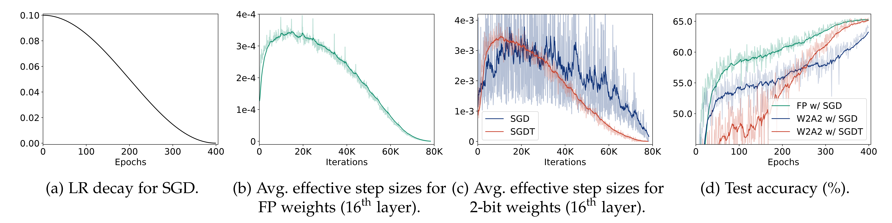
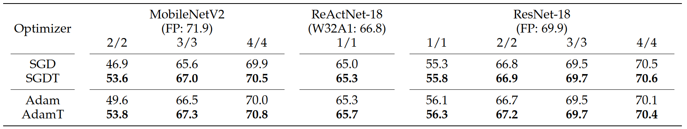

Training curves of full-precision (FP) and quantized models for ResNet-20 on CIFAR-100. Both weights (W) and activations (A) are quantized to a 2-bit precision (W2A2). With a gradient-based optimizer (SGD), we can control the average effective step size of FP weights roughly by scheduling a LR ((a) vs. (b)), while we could not for quantized weights (the blue curve in (c)). The curve for quantized weights is noisy, and decreases rapidly at the end of training, suggesting that 1) the quantized weights can alter significantly with a small LR and/or a small change of a LR, disturbing a coarse-to-fine parameter update and causing an unstable training, and 2) adopting a manually scheduled LR for QAT is sub-optimal. The optimizer coupled with our scheduling technique (SGDT) can control the average effective step size of quantized weights by adjusting the number of transitions explicitly (the red curve in (c)), showing better results in terms of accuracy and convergence (the red curve in (d)).
Abstract
Quantization-aware training (QAT) simulates a quantization process during training to lower bit-precision of weights/activations. It learns quantized weights indirectly by updating latent weights, i.e., full-precision inputs to a quantizer, using gradient-based optimizers. We claim that coupling a user-defined learning rate (LR) with these optimizers is sub-optimal for QAT. Quantized weights transit discrete levels of a quantizer, only if corresponding latent weights pass transition points, where the quantizer changes discrete states. This suggests that the changes of quantized weights are affected by both the LR for latent weights and their distributions. It is thus difficult to control the degree of changes for quantized weights by scheduling the LR manually. We conjecture that the degree of parameter changes in QAT is related to the number of quantized weights transiting discrete levels. Based on this, we introduce a transition rate (TR) scheduling technique that controls the number of transitions of quantized weights explicitly. Instead of scheduling a LR for latent weights, we schedule a target TR of quantized weights, and update the latent weights with a novel transition-adaptive LR (TALR), enabling considering the degree of changes for the quantized weights during QAT. Experimental results demonstrate the effectiveness of our approach on standard benchmarks.
Results

Quantitative comparison of quantized models on ImageNet in terms of a top-1 validation accuracy. We train quantized models with plain optimization methods (SGD and Adam) or ours using a TR scheduler (SGDT and AdamT). The bit-widths of weights (W) and activations (A) are represented in the form of W/A. For comparison, we also report the performance of full-precision (FP) and activation-only binarized (W32A1) models. The results of ReActNet-18 for the plain optimizers are reproduced with an official source code.
We provide in this table a quantitative comparison of quantized models trained with optimizers using a LR (SGD and Adam) and our approach (SGDT and AdamT). We report a top-1 classification accuracy on ImageNet using the MobileNetV2, ReActNet-18 and ResNet-18 architectures. From this table, we can see that our method provides substantial accuracy gains over the plain optimizers, regardless of the network architectures and quantization bit-widths. This indicates that scheduling a target TR is a better choice for the optimization process in QAT compared to the conventional strategy scheduling a LR. We can also observe that the performance gaps using light-weight MobileNetV2 (0.6~6.7%) are more significant than the ones using ReActNet-18 or ResNet-18 (0.1~0.5%). Moreover, the performance gaps become larger for smaller bit-widths of MobileNetV2. These results suggest that the TR scheduling technique is especially useful for compressing networks aggressively, such as quantizing a light-weight model or extremely low-bit quantization.
Paper
|
|
|
|
J. Lee, J. Jeon, D. Kim, and B. Ham
Scheduling Weight Transitions for Quantization-Aware Training
In IEEE/CVF International Conference on Computer Vision (ICCV) , 2025
[arXiv] [Code]
|
Acknowledgements
This work was supported in part by NRF and IITP grants funded by the Korea government (MSIT) (No. 2023R1A2C2004306, No.RS-2022-00143524, Development of Fundamental Technology and Integrated Solution for Next-Generation Automatic Artificial Intelligence System, RS-2021-II212068, Artificial Intelligence Innovation Hub) and the Yonsei Signature Research Cluster Program of 2025 (2025-22-0013).